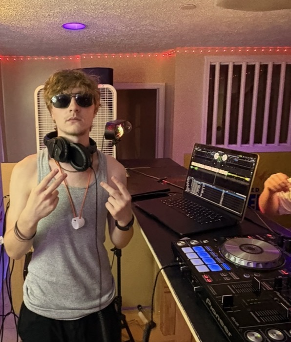

About Rave Rapture
on september 15, 2005, the Wii remote was shown to the world for the first time and so was i. somewhere in the chicago suburbs i was born. somehwere in the chicago suburbs i stayed. i listened to music of all shapes and sizes. hair metal, classic rock, classic, rock, contemporary pop, boom bap, new jack swing, punk, crunk, whatever was around. i learned to play piano first when i was 9, then it was guitar, then i realized people would probably respect a developed voice the most, so i learned to sing too. i dont know where the DAW came into my life but it was sometime during COVID.

redd is dead was my first moniker on the internet and subsequently my most popular. after early youtube success making animations with my friend Daniel from around 2020 til the end of 2022, the schedule being sporadic/dormant ever since. ironically, redd is dead is more successful on spotify due to my cover of Frank Ocean's "Wiseman," although there are years of old music on there...that i'd rather just forget. i choose not to address it.
i consider rave rapture to be the next natural step, making different kinds of music but staying true to the fact that i typically do it for fun. im lucky to have experienced even the little success i already have, even if i have no idea where some of it comes from. music to make you move your posterior, prototype owned and operated. also don't fact check that Wii remote thing